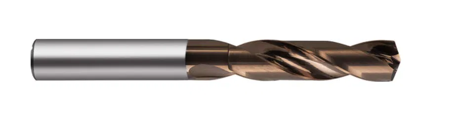

Beispielhafter Digital Product PassportExample Digital Product Passport
Demonstrator für die BachelorarbeitDemonstrator for the Bachelor's thesis
Produkt: Ratio Bohrer mit Innenkühlung VHM / Typ: INOX PROProduct: Ratio Drill with Internal Cooling, Solid Carbide / Type: INOX PRO
Dies ist ein beispielhafter digitaler Produktpass für ein Industrieprodukt.
Der Demonstrator zeigt, wie Produkt-, Material- und Nachhaltigkeitsdaten
digital gebündelt dargestellt werden können.
This is an example digital product passport for an industrial product.
The demonstrator shows how product, material, and sustainability data
can be bundled and presented digitally.

ProduktinformationenProduct Information
Bezeichnung:Designation:Ratio Bohrer mit Innenkühlung VHMRatio Drill with Internal Cooling, Solid Carbide Serie:Series: 8513 Durchmesser:Diameter: Ø 3,000 mm Toleranz:Tolerance: m7 Bohrtiefe:Drilling depth: 5xD Norm:Standard: DIN 6537L Typ:Type: INOX PRO Oberfläche:Surface: Perrox Spitzenwinkel:Point angle: 140° Innenkühlung:Internal cooling:mityes Artikelnummer (Beispiel):Article number (example): 8513 3.000
Der VHM-Bohrer INOX PRO wurde speziell für die Herstellung präziser Bohrungen
in rostfreien Stählen, Edelstählen und Titanwerkstoffen konzipiert. Durch die
optimierte Schneidengeometrie mit leicht konkaver Hauptschneidenform und die
Perrox-Beschichtung erreicht das Werkzeug höchste Bohrungsqualitäten bei
gleichzeitig langen Standzeiten.
The solid carbide INOX PRO drill was specially designed for producing precise
holes in stainless steels and titanium materials. Thanks to the optimised
cutting-edge geometry with a slightly concave main cutting edge and the Perrox
coating, the tool achieves the highest hole quality alongside long tool life.
Anwendung:Application:rost-/säure-/hitzebeständige Stähle, Titan- und Titanlegierungen, Inconel, Hastelloy, Monelstainless/acid-/heat-resistant steels, titanium and titanium alloys, Inconel, Hastelloy, Monel
Materialien und StoffeMaterials and Substances
Das Produkt besteht aus Vollhartmetall (VHM), einem Verbund
aus Wolframkarbid-Partikeln in einer Kobalt-Bindephase. Zusätzlich ist das
Werkzeug mit einer Perrox-Beschichtung versehen, die die
Verschleißfestigkeit und Standzeit bei der Bearbeitung von rostfreien und
hitzebeständigen Werkstoffen weiter erhöht.
The product is made of solid carbide, a composite of
tungsten carbide particles in a cobalt binder phase. In addition, the tool
is coated with Perrox, which further increases wear
resistance and tool life when machining stainless and heat-resistant materials.
Beispielhafte Materialzusammensetzung: ca. 90 % Wolframkarbid (WC), ca. 10 % Kobalt (Co)-Bindephase.Example material composition: approx. 90% tungsten carbide (WC), approx. 10% cobalt (Co) binder phase.
Lieferkette & HerkunftSupply Chain & Origin
Beispielhafte Darstellung der Rohstoffherkunft und Fertigung entlang der
Lieferkette. Ein zentraler Gedanke des Digital Product Passport ist die
Rückverfolgbarkeit von Materialien über die gesamte Wertschöpfungskette hinweg.
Example illustration of raw material origin and manufacturing along the
supply chain. A core idea of the Digital Product Passport is the
traceability of materials across the entire value chain.
Rohstoffquelle: WolframkarbidRaw material source: Tungsten carbide
Rohstoffquelle: KobaltRaw material source: Cobalt
FertigungsstandortManufacturing site
Nachhaltigkeitsdaten / CO2Sustainability Data / CO2
Beispielhafter CO2-Fußabdruck: 12,4 kg CO2e pro Produkt.Example CO2 footprint: 12.4 kg CO2e per product.
Recyclinganteil: 18 %Recycled content: 18%
Vollhartmetall-Werkzeuge sind grundsätzlich recyclingfähig. Am Ende der
Lebensdauer kann das Hartmetall aufbereitet und der Wolframkarbid-Anteil
einem Recyclingkreislauf zugeführt werden.
Solid carbide tools are generally recyclable. At the end of their service
life, the carbide can be reprocessed and the tungsten carbide content
returned to a recycling loop.
Reparatur, Nutzung und EntsorgungRepair, Use and Disposal
Der Bohrer sollte gemäß den technischen Spezifikationen (Drehzahl, Vorschub,
Kühlschmierung) eingesetzt werden, um eine maximale Standzeit zu gewährleisten.
The drill should be used according to the technical specifications
(speed, feed rate, coolant) to ensure maximum tool life.
Ein Nachschleifen ist je nach Verschleißzustand möglich und wird empfohlen,
um die Lebensdauer des Werkzeugs zu verlängern, bevor eine Entsorgung erfolgt.
Regrinding is possible depending on the wear condition and is recommended
to extend the tool's service life before disposal.
Für Rückfragen zum Nachschleifen kontaktieren Sie uns unter:For questions about regrinding, please contact us at:dpp@guehring.info
Nach Ende der Nutzungsdauer sollte das Werkzeug fachgerecht dem
Hartmetall-Recycling zugeführt werden.
At the end of its service life, the tool should be properly disposed of
through carbide recycling.
Das Produkt entspricht der Norm DIN 6537L für
Vollhartmetall-Spiralbohrer mit Innenkühlung und verlängerter Schneidlänge.
The product complies with the DIN 6537L standard for
solid carbide twist drills with internal cooling and extended flute length.